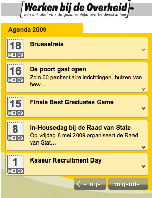
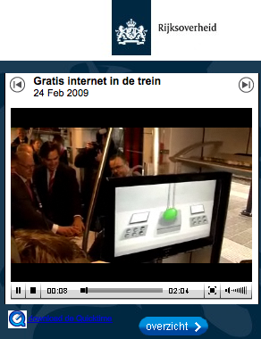
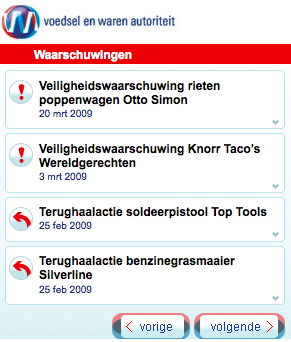
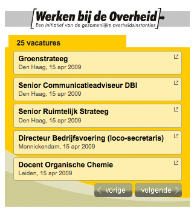

Zoekdienst Bekendmakingen

Widget die de gegevens van de Bekendmakingen van Overheid.nl weergeeft zoals herbruikbaar gemaakt door Geostart op Vergunningenkaart.
Kijk snel en eenvoudig wat er in de buurt aan vergunningen en andere bekendmakingen zijn uitgegeven.

installatie naar Netvibes
installatie naar Hyves
Agenda van Werken bij de Overheid
Agenda widget met daarin de aankomende evenementen van Werken bij de Overheid (RSS).
installatie naar iGoogle
installatie naar Netvibes
installatie naar Hyves
Rijksoverheidsvideo's
Video's zoals gepubliceerd door de rijksoverheid.
installatie naar iGoogle
installatie naar Netvibes
installatie naar Hyves
Waarschuwingen van de VWA
De meest recente waarschuwingen van de Voedsel en Warenauthoriteit (RSS).
installatie naar iGoogle
installatie naar Netvibes
installatie naar Hyves
Vacatures van Werken bij de Overheid
De vacatures van Werken bij de Overheid (RSS).
installatie naar iGoogle
installatie naar Netvibes
installatie naar Hyves